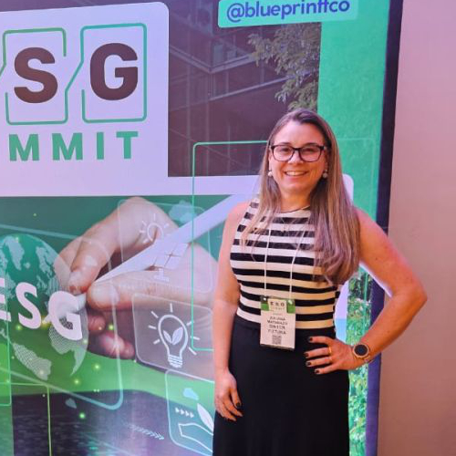
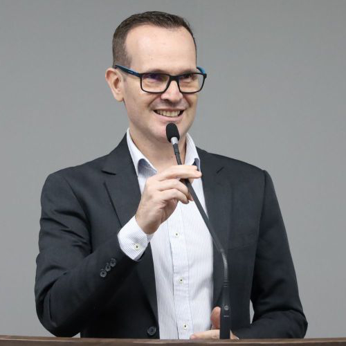

1° dia (22/04)
Impacto da manutenção e confiabilidade na gestão de ativos na indústria
de celulose e papel
com Anderson Iesley Feriani
450 vagas
Cursos
Convidados
19h00 às 20h30
Auditório Jamil Salomão
A maior fabricante de celulose do mundo, uma das maiores produtoras de papéis da América Latina e
líder do mercado brasileiro no segmento de papel higiênico. Foco em sustentabilidade. Suzano.com.br

Indústria 4.0 e Tecnologias nas Engenharias
com Eng. Cesarino Carvalho Junior
450 vagas
Cursos
Convidados
20h40 às 22h10
Auditório Jamil Salomão
AEAA – Associação dos Engenheiros, Agrônomos e Arquitetos de Americana e CREA-SP – Conselho Regional
de Engenharia e Agronomia de São Paulo. Graduação em Matemática pela Pontifícia Universidade
Católica de Campinas e Engenharia Industrial Mecânica pela Universidade Metodista de Piracicaba.
Mestre em Administração pela Universidade Metodista de Piracicaba e Especialização em Administração
pela Universidade Salesiana Dom Bosco.
A Importância do planejamento de obras
para a Garantia da Qualidade
com Raphaela dos Santos e equipe
95 vagas
Engenharia Civil
20h40 às 22h10
Sala VIP
Fundada em 2005, a Construtora Sega atua em todo o interior do estado de São Paulo, planejando e
executando obras de alta complexidade.
Projetamos e construímos empreendimentos residenciais, que são muito mais do que obras de
engenharia.
São empreendimentos construídos e focados totalmente em pessoas. Este pequeno ajuste de foco faz uma
enorme diferença no resultado final.

2° dia (23/04)
Muito além da espuma...
O papel da engenharia na produção de
sabonetes
com Juliana Matarazzo - Gerente de Excelência Operacional
450 vagas
Cursos
Convidados
19h00 às 20h30
Auditório Jamil Salomão
Profissional sênior com mais de 20 anos de experiência na área de Qualidade, Sistema de Gestão e
Meio Ambiente Industrial. Gerenciamento de laboratórios de controle e garantia da qualidade, desde a
implantação à manutenção do Sistema de Gestão da Qualidade, incluindo HACCP, Boas Práticas de
Fabricação, 5S, procedimentos internos, necessidade de treinamento, elaboração e acompanhamento de
KPI´s para tomada de decisão e priorização de trabalhos, auditorias internas e externas de órgãos
reguladores, certificadores e clientes. A Empresa SINTER de Monte Mor é fabricante de cosméticos,
perfumaria e artigos de higiene pessoal. Soluções completas da massa base ao produto final.
Sinterfutura.com.br

Projetos de Instalações de Subestações Elétricas
com Eng. André Yuri Paspardelli - Gerente de Projetos
450 vagas
Cursos
Convidados
20h40 às 22h10
Auditório Jamil Salomão
A ENGEGROUP se destaca como uma das melhores empresas de energia elétrica do país. Engenheiro de
Produção, pela FAM – Faculdade de Americana com carreira em desenvolvimento nas áreas de Engenharia
de Produção, Suprimentos e PCP. Experiência no planejamento, controle e programação de obras,
atuando em todo o processo de gestão da cadeia de suprimentos, envolvendo gestão de estoques, compra
de materiais, contratação de serviços, expedição, gestão de mão de obra e desenvolvimento de
fornecedores, sempre visando a entrega de níveis satisfatórios de lucratividade e produtividade.
3° dia (24/04)
O futuro da educação não está Harvard... Está no seu prompt!
Como utilizar a IA para aprender, estudar e criar!
com Giuliano Coan
450 vagas
Cursos
Convidados
19h00 às 20h30
Auditório Jamil Salomão
Professor Mestre em Educação. Google Certified Innovator. Apple Teacher. National Geographic
Certified. Especialista em SEO local.

Maquete de uma casa:
O passo a passo para o ensino da estrutura de concreto armado
com Eng. Dra. Rosilene de Fátima Vieira
80 vagas
Cursos
Convidados
20h40 às 22h10
Sala 29
Engenheira Civil pela Universidade Federal de Uberlândia - UFU. Mestrado, Doutorado e Pós-doutorado
em Engenharia Civil pela Universidade Estadual de Campinas – UNICAMP, com ênfase em Estruturas.
Professora da área de Estruturas para Engenharia Civil na FAM – Faculdade de Americana.
Sustentabilidade e Circularidade
com Adriano Barbosa - CEO da Environmental Services
95 vagas
Cursos
Convidados
20h40 às 22h10
VIP
A economia circular é um modelo de produção e de consumo que envolve a partilha, o aluguel, a
reutilização, a reparação, a renovação e a reciclagem de materiais e produtos existentes, enquanto
possível. Na prática, a economia circular implica a redução do desperdício ou dos resíduos ao
mínimo. Quando um produto chega ao fim do seu ciclo de vida, os seus materiais são mantidos dentro
da economia sempre que possível graças à reciclagem e reuso. E podem, deste modo, ser utilizados uma
outra vez, o que permite criar mais valor. Atualmente CEO da Environmental Services, Sócio-diretor
da ETS, CEO SGREEN, Diretor de Sustentabilidade do Instituto PDK, responsável ambiental e químico de
empresa nacional e por fim, empreendedor.
Curta se achou a pagina útil e acompanhe Info.FAM